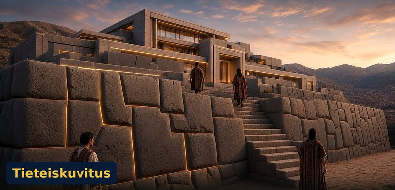

誰が誰に教えたのか ボリビア · プーマプンク ペルー · クスコ プーマ・パンクでは指先が石に刻まれた内角のスケールを示します。カスコでは目を引くのがジョイントで何度も回転し次の石の縁が回転ごとに続きます。1549 年、シエザ・デ・レオンはティワナクでインカがこれらの遺跡をキュスコの城壁のモデルとして使用したと聞いた.。60年後インカ系出身のガルシラソはその逆のことを書きましたインカの師匠がティワナクを建てたのです。放射性炭素はプーマ・パンクの建物を紀元580年710年頃に位置づけますインカ帝国の数世紀前です。石を比較するとどちらが正しいのか?
印の読み方 T 研究結果 A 年代記または他の文書 L 伝説 H 研究者の仮説 S 推測 K イラストレーターの解釈 2011年の写真です。背景情報は場所に関するもので写真の正確な石ではありません
I ティワナク：いちばん古い層 II プマ・プンク：標準化された精密さ III シリュスタニ：湖のほとりの遺産 IV クスコ：インカは写したのか V サクサイワマン：労働と記憶 VI オリャンタイタンボ：未完成のまま残された現場 VII マチュ・ピチュ：所領とその名 VIII トレオンと刻まれた岩 IX サマイパタ：東の縁 X 終幕：クスコの植民地の層 The plain and the lake ティワナク、プマ・プンク、シリャスタニ：インカより古い石と、コリャの塔。
The Inca heartland クスコ、サクサイワマン、オリャンタイタンボ：模倣、労働力、そして未完の工事現場。
Rock and light マチュ・ピチュ、トレオン、サマイパタ：建物から彫られた山へ。
The last layer クスコで、インカの壁の上に載る植民地時代の壁。
I ティワナク：いちばん古い層 1549年にスペイン人がインカがこれを建てたのか尋ねました。地元の人々はその質問に笑った.
A 1549年にティワナクを通過した。彼の年代記には建物がインカ時代に作られたのかと尋ねると書かれています。地元の人々は笑って廃墟はインカ時代よりも古いと言った. L 一晩で完成したと聞いていた. A キュスコの建物はこの壁の模様で作られたと聞きました (Cieza 1553, chapter CV ).
T 放射性炭素年代は紀元180年頃にティワナクが設立されたとされています。その最大の記念碑は主に7世紀に建てられました (Marsh ほか 2023 ). T 2025年6月、研究者たちはティワナクスの南東215kmに位置するパラスパタ寺院を公表した.。約125×145mの大きさで、庭の周りに15の囲いがあります.。ティワナクが広まった範囲を示しています (Capriles ほか 2025 ).
T カラササヤの庭にはポンセとフレイルのモノリットがあります。ベネットのモノリットは半地下寺院で見つかり、現在遺跡の石博物館に (Tiwanaku site description ) について。ポンスとベネットはケロカップとタバコの錠剤を握ってる H 人物の肖像画ではなく、山や山から取られた石として読みます (Villanueva Criales 2024 ). T 柱間の埋め込み壁の多くは1950年代後半に始まった再建の結果である.
ティワナク&プーマ・パンク 最寄りのビデオ: 2011年8月の午後、ティワナクとプーマ・パンク
野原の端にはプーマ・パンクがある.。2006年に砂岩のプラットフォームが平ら化され、ブロックが移動され、一部が間違った場所に置かれました (Vranich 2018 ) について。2011年の写真は遺跡の歴史の一段階を示しています
II プマ・プンク：標準化された精密さ 指先がスケールを示します。同じ鋭い内角がブロックからブロックに繰り返されます
T プーマ・パンクはティワナク時代の建物でインカ時代のものではありません。マッシュほか。ティワナクからの102の放射性炭素年代をモデル化しました。プーマ・パンクでは 5つの日付が 2つの異なる色の表面の上と下から作られ建物の配列を精製しています。モデルでは、建物は公元580年頃に始まり、採石と彫刻された石は630年頃に最後に使用され、建物は710年頃に終了しました.。著者らは、この作品が"〜2世代だけの壁職人の手の中にあった可能性を示唆している (Marsh ほか 2023 ).
T 赤い砂石はティワナクスの南の山で採掘されました。灰色のアンデサイトはティチカカ湖の南岸、おそらくカピア火山またはコパカバナ半島 (Villanueva Criales 2024 ) について。南の運河の壁には約19cmの金属のが残っています。この金属は銅、アセンニク、ニッケル合金 (Lechtman 1996 ).
H 4パーセントのスケールで 3Dプリントに変換し散らばった部品がどのように合っているかをテストしました。原図の証明ではなく、合理的な再構成 (Vranich 2018 ).
最寄りのビデオ: プーマ・パンクにある T 形のノッチの近似
ティワナクでは同じことが繰り返されます。ティティカカ山の向こう側では石は死者の家になります
AI イラスト · 代替史 S プーマ・パンクは異なる技術的に先進的な文明の作業場として想像されました。画像は仮説を示しており研究に基づいていない.。研究に基づく記述はこの章のテキストに載っています.III シリュスタニ：湖のほとりの遺産 ここでは死者は地下に埋葬されませんでした。湖の上には塔が建てられた.
T ウマヨ湖の一半島には 91 の墓塔、つまりチュルパが立っています.。クッラ族はインカ族より前に 13世紀に建て始めました。最も高い丘は12メートルの高さで (Peru tourism inventory ). H カーブに切断されたブロックと向き合うことは、通常インカ時代に起因します.
A ベルトニオのアイマラ語辞書 (1612) では、アマヤは死体という意味です.。アマヤ・ウタは"死者の家"です (Bertonio 1612 ).
T 1971年、黄金、銀、銅の物品、脊椎骨殻、珠は502枚の黄金を含むチャルパ・デル・ラガルトの近くで発掘された.。ボリバールはこの発見をカッラ時代と関連付けています (Bolívar 2003 ) について。この写真の塔から発見されたものじゃない
シルスタニ シルスタニ シルスタニ インカの時代には、塔は倒されていませんでした.それは、新しい石工工芸で再造されたと言われています.。インカの首都で壁はどんな感じでしょうか?
IV クスコ：インカは写したのか インカがティワナクを写したのなら、この路地はプマ・プンクのように見えるはずです。そう見えるでしょうか。
T Protzen と Nair は、ティワナクとインカの壁を比較し、結合構造が一致しなかった (Protzen and Nair 1997 ) について。インカの多角形の壁ではそれぞれの石が隣の石にひとつずつ合わさっています。標準部品はない
A ハトゥン・ルミヨク通りにある十二角石は、当初インカ・ロカの宮殿の壁の一部でした.。スミソニアン博物館には壁の3Dモデルがあります (Smithsonian 3D ).
T 2014年3月、約50 × 40cmの面積に"JHK"文字が石に噴射されました (Panamericana 9 March 2014 ) について。2025年2月18日、石は金属物体で打たれた.。6つの目に見える衝撃痕跡が残り、断片が割れた (Ministry of Culture 18 February 2025 ) について。2011年のジャニの写真には 2つの事件前の石が写っています
S ガイドが同じ壁に指摘する"熊"と"蛇"は研究結果ではなく見る方法です
クスコ クスコ クスコ 2011年と西暦1500年頃のクスコの路地 写真 2011 2011年のクスコの、路地の多角形の壁。路地の突き当たりには階段としっくい塗りの家があります。写真：Jani Korpi。AIを用いた歴史イラスト K 西暦1500年頃のクスコ。細い通路が多角形の石壁に沿って続きます。視点と壁の比率は Jani Korpi の旅行写真に基づいています。通行人、その荷、建物の上部は解釈です。石の継ぎ目、路地の突き当たり、屋根の高さは写真と異なります。AIを用いた歴史イラスト。Jani の元の路地写真 · クスコの歴史（UNESCO） · 展覧会「The Andean Tunic」（メトロポリタン美術館）
最寄りのビデオ: カスコの石の壁が通りから撮影されました
はティワナクスのコピーじゃない。それでもインカはティワナクを知っていました。彼らはそれについて何を言ったのか?

AI イラスト · 代替史 S ハトゥン・ルミヨク石は異なる技術的に先進的な文明の作業場として想像されました。画像は仮説を示しており研究に基づいていない.。研究に基づく記述はこの章のテキストに載っています.V サクサイワマン：労働と記憶 最初のスペイン人はこれをローマの建物と比較しました。カーシラソはインカの血統でティワナクをインカの師匠に渡しました
A ピザロの書記ペドロ・サンチョは 1534 年に、スペイン人によると、セゴヴィアのローマの水道道やヘラクレスやローマ人の建物のどれも見るべきものではありませんでした.。1556年に初めて出版されたラムシオのイタリア語翻訳にのみ保存されています (Ramusio 1556 ).
A シエザ・デ・レオンには2万人の労働力があると記されています 4千人が石を採掘し砕きました 6千人が皮と繊維のロープで引きずり込み残りは溝と基礎を掘り、一部は柱と梁を切りました。同じ章で彼は、地元の人々はこの場所を太陽の家、スペイン人は要塞と呼んだと言います.。1880年まで印刷されませんでした (Cieza, El señorío de los Incas, chapter LI ).
A ガーシラソ・デ・ラ・ヴェガは 1609 年に、この作品を監督した人は 4 人であると書いています.。3つ目のアカフアナ・インカはティアフアナコの多くを建てたとも言われています L ガルシラソは疲れた石が血を泣いたことも語っています。石が斜面から滑り落ちて石を引っ張っていた何千人もの男たちを打ち砕いた (Garcilaso 1609, book VII, chapter XXIX ).
T 2024年には、ムウイクマルカ、クルズモコとジグザグ壁のバルアルテスエリアで6つの試験穴が開かれました.。このプロジェクトは、クスコ文化局のサビノ・クイスペとアレキセイ・ヴラニッチが主導しています.。クルーズモコではインカ以前のキルケ人居住が確認されました (El Búho 14 September 2024 ) について。2026年4月、このプロジェクトはドローンライダー、フォトグラムメトリ、地面透射レーダーで約69ヘクタールの地図作成を報告しました.。植物の下にはテラスや道路網や構造物や採石場もありました。日付は公表されていません (CNR ISPC 21 April 2026 ).
T クルーズ・モコ地区では 138個の石が散らばっています。研究者たちは石が顔面を平らな輪郭に変えたときに再び合っているかどうかを調べました。輪郭は深さを失い石は内側に収縮し異なる深さで配置され顔は3–5度傾いています。そのため、自動マッチングは不確実だった.。クルーズ・モコに関する研究であり、ジグザグの壁の年齢ではない (Reyes-Sevilla ほか 2026 ).
最寄りのビデオ: 2011年8月のある日の午後サクシワハマンの壁
ギャルシラソの物語は記憶と権威についてです。オランタイトンボにはティワナクの影響も石から主張されている場所があります
AI イラスト · 代替史 S サクシアワマンの壁は異なる技術的に先進的な文明の作業場として想像されました。画像は仮説を示しており研究に基づいていない.。研究に基づく記述はこの章のテキストに載っています.VI オリャンタイタンボ：未完成のまま残された現場 完成した壁が隠しているものを見ることができます完成していない工事現場です
H 6つのモノリットの壁の関節には T 形の割れ目があります。ティワナク族の石匠が建てたと推測されています。Protzen と Nair は、ここでは割引が1つの形しかなく、ティワナクでは多くの形があると指摘する (Protzen and Nair 1997 ).
T 帝国崩壊後も谷の灌は続けられた.。ハンターはプカラカイ貯水池の堆積物と日付と土地調査記録を組み合わせました。彼の説明では、約15kmの運河システムは植民地時代まで維持され、システムが崩壊し、貯水池が1600年頃から泥に浸透するまで (Hunter 2025 ).
Tノッチは、この比較で検討された影響提案の一つであり、それさえも議論されています.。川の下には丘陵がありその住民は帝国のいたるところに根を張っていました
VII マチュ・ピチュ：所領とその名 世界はこの場所を、建てた人々が使っていなかったかもしれない名で知っています。
T 人体遺骸のAMS年代は1420年1532年頃に使用されている.。年代表から得られた時間線より約20年早かった (Burger ほか 2021 ) について。骨と歯から得られた日付で遺跡の使用時期が分かります。壁が建てられた年数は公開されます
H アマド・ゴンザレスとバウアーはビンガムのメモや古い地図や文書からインカがこの場所をフエイナピチュ (Huayna Picchu) と呼んだと結論付けていますAmado Gonzales and Bauer 2021 ).
T サラザールほか。マチュピチュに埋葬された34人の遺体のゲノムを研究しました。彼らの祖先はアマゾン側を含む帝国の様々な地域から来た (Salazar ほか 2023 ) について。研究は、誰がどの家に住んでいたかは言わない.
壁が曲げられ朝の光に囲まれます
VIII トレオンと刻まれた岩 壁は天然岩の上に建てられている.。その下には洞窟がある.
T トーレオンの建設者は特定の太陽現象に焦点を当てました。コスチュークとジオルコフスキーは3D調査データを使ってこの建物を研究し、これは正確な天文観測所ではなかったと結論付けました (Kościuk and Ziółkowski 2020 ).
インカは石を常に置いていませんでした。コンドルの寺院では岩が建物の一部に彫られています
コンドル岩は彫刻で敷かれていません。東部のボリビアの斜面には山全体がこんな感じです
IX サマイパタ：東の縁 経路中ずっと関節を調べた。サマイパタでは岩そのものが彫刻です
T エル・フエルテ・デ・サマイパタは、長さ220m,幅60mの砂岩で、動物、運河、ニッチ、船が彫られている.。モジョコヤ文化の人々は紀元300年頃に岩を造り始めました。インカはそれを省の首都にした.。ユネスコは14世紀、ジオルコフスキのレビューは15世紀半ばに (Ziółkowski 2020 ) について。インカ時代の石の壁の残骸は 2つの並列運河を含む数々の彫刻を切り取った.。彫刻はインカ時代よりも古い (UNESCO ).
S エリヒ・フォン・ダニケンは2つの並列チャンネルを宇宙船の打ち上げランプだと読みました。研究者たちは、それらを彫刻された道として見ています.そしてランプの考え方には考古学的な裏付けがありません.
最寄りのビデオ: エル・フエルテ・デ・サマイパタの彫刻された岩
インカは古い彫刻された岩の隣に建てた。最後の章ではインカにも同じことが起こります
X 終幕：クスコの植民地の層 最後の写真は最初の質問に戻します誰が誰の上に建てるのか?
A スペイン人はインカの城壁の上に教会と家を建てた.。ユネスコはインカの首都と植民地都市 (UNESCO ).
T コンビーほか。クスコ近郊の9つのインカ遺跡でおよそ3000の地震の影響を地図化しました。1400年から1533年までの間、インカの時代にかつて報告されていない地震 (Combey ほか 2022 ).
A 1950年の地震の後、ユネスコは1951年にクスコに専門家団を派遣した.。ジョージ・クブラーの報告書は、町の復興と記念碑の復元について (Kubler 1952 ) について。20世紀の修復は独自の層です
H 2025年1月、Jorge Calero FloresとMildred Fernández Palominoの研究者らは、地下レーダーが QorikanchaとSacsayhuamánの間の地下通路を示していると述べた.。2025年7月、その長さは約1,750m (Archaeology 16 January 2025 , Andina 18 July 2025 ) について。査読された出版物はないのでこれは仮説です
クスコ シエザが聞いたところによるとティワナクスの廃墟は既にインカ時代から古く。クスコではインカの城壁が最下層になっています
このページの結論 石は2つの物語を支えてはいない。プーマ・パンクの建設段階、約公元580年 (Marsh ほか 2023 ) は、原始の記念碑の建設者としてインカのマスターを排除しています.。建物の層の有機物質は放射性炭素で年代付けされています石の形成ではなくモデル化された年代は推定ですがインカ時代との間隔は何世紀にも及びます。チワナクでは同じ標準部品が繰り返され、関節は金属ので閉ざされ、インカの壁では各石が隣に固定されています.。インカが遺跡からインスピレーションを得ていることを排除していません。3つの要素を別にしておく必要がありますインスピレーションを得ることテクニックを直接受け継ぐこと建築家が誰だったか。シエザが記録した物語は地元の伝統でガルシラソの物語はインカの血統の歴史であり発掘の発見でもありません。インカ人はその遺跡を知っていましたガルシラソの物語は遺跡を自分たちの歴史の一部にしたいと願っていたことを示しています。同じことがカスコでも起こりますスペイン人はインカの城壁の上に建て 20世紀には両方を修復しました
ティワナクとインカの石工芸をプロツェンとナイアが比較 (英語で)
出典 シエザ・デ・レオン、ペドロ・デ (1553) パール・プラマ・デ・ラ・クロニカ・デル・ペルー 章 CV。カルペ 1922年版インターネットアーカイブ ファイル.org シエザ・デ・レオン、ペドロ・デ (1550年代に書かれた、1880年に印刷された). ペルーの歴史の第2部インカ王国の物語 第"章。インターネットアーカイブ ファイル.org ガーシラソ・デ・ラ・ヴェガインカ (1609年) インカのコメンタリオ・リアル 第七巻第二十九章。インカ・ガルシラソ博物館、PDF ミューゼオガシラソ.カルチャルカスコ.ゴブ.ペ ラムシオ、ジョバンニ・バティスタ (1556) 第3巻ナビゲーションと旅行 わかった。ベネチア。ペドロ・サンチョのイタリア語の説明が載っています。本物のデジタル図書館 rbdigital.realbiblioteca.es サイトから ベルトニオルドヴィコ (1612年) エイマラ語辞書 わかった。アマヤとアマヤ・ウタ。インターネットアーカイブ ファイル.org マッシュ、E。ジェイ。エット・アル。(2023年)。ティワナクスの崩壊のベイエスの年代表 PLOS ONE 18(11): e0288798. ドイ.org カプリレスジェイ。Mさん。エット・アル。(2025年)。東への入り口:パラスパタ寺院とティワナク州の東南の拡張 古代 99(405): 831–849. ドイ.org ティワナク遺跡管理:遺跡説明と博物館 ティワナク・ゴブ・ボ ヴィラヌエバクリアルズ。(2024年)。酔っ払った山: 多種視点からティワナク (紀元500年~1100年) のベネットとポンセのモノリットの分析 ラテンアメリカ古代 36(1): 181–201. ドイ.org ヴァラニッチ、A。(2018年)。ボリビアのティワナクにある古代建築を再建する 3Dプリントの可能性と希望 遺産科学 6: 65. ドイ.org レכטマン、H。(1996年)。ブロンズと中央の地平線 ボレティンミュゼオデルゴール 41 図 12–13:プーマ・パンク・クランプ バンレップカルチャル ペルー外交・観光省リスト:Sillustani考古学複合体 (コード424) オンラインで相談する ボリバル、W.。(2003年)。シルスタニで発見された金貨の提供の解釈. ボレティン・デ・アーケオロジー PUCP 7: 419–427. ドイ.org プロツェン、J・P。そしてNair,S.。(1997年)。インカの石工に技を教えたのはだれですか。ティアワナコとインカの彫刻石工芸の比較 建築史学者協会誌 56(2): 146–167. オンライン.ucpress.edu スミソニアン研究所:ハトゥンルミヨック壁の3Dモデル. 3d.si.edu パナアメリカナ (2014年3月9日)。クスコ:新しいピントが12角の石に現れる. パナアメリカナ.ペ ペルー文化省 (2025年2月18日)。12つの角の石に攻撃 www.gob.pe エル・ブホー (2024年9月14日)。サクシアワマンの試験発掘 elbuho.pe (エルブホー) CNR ISPC (2026年4月21日)。プレスリリースサクシワハマン www.ispc.cnr.it レイエス・セビラ、M. バランテス・レイノルズ、M.。Pさん。そしてVranich,A.。(2026年)。クルーズ・モコの解読: ペルーのサクシアワマンにおける初期インカ建物の散らばった石の幾何学的分析 npj 遺産科学 14. ドイ.org ハンター、R。(2025年)。オランタイトンボのインカ生態系の構造的変革スペインの支配下 古代 99(403): 203–220. ドイ.org ハンバーガーR。Lさん。エット・アル。(2021年)。マチュピチュの新しいAMS日付: 結果と意味 古代 95: 1265–1279. ドイ.org アマド・ゴンザレス。そしてバウアー、B.。Sさん。(2021年)。古代インカの町は"フエイナピチュ"と呼ばれていた ナウパ・パッチャ 42(1): 17–31. ドイ.org サラザール。エット・アル。(2023年)。マチュピッチュの住民の遺伝的歴史と生活様式についての洞察です 科学の進歩 9(30). ドイ.org コシューク J。そしてZiołkowski,M.。(2020年)。マチュピチュのタレオン: 天文観測所? 建築学委員会 16(4): 7–31. ドイ.org ユネスコ:フォエルテ・デ・サマイパタ (世界遺産883) whc.unesco.org UNESCO:クスコ市 (世界遺産273号) whc.unesco.org コンビー、A。エット・アル。(2022年)。ペルーのクスコ地域における地震リスクの再評価 クアターナリー・インターナショナル 634: 81–98. ドイ.org クーブラー、G。1952年 (イギリス) クスコ: 町の再建と記念碑の復元 わかった。ユネスコ、博物館と記念碑 3.。(レビュー: アメリカ古代) ドイ.org 考古学誌 (2025年1月16日)。カズコの下にあるインカのトンネルシステム 考古学.org アンディーナ (2025年7月18日)。クスコ地下:考古学者が帝国の都市の下にある道路網の一部を発見. アディナ.ペ 遺跡を巡る 動画を見る ビデオのタイトルはYouTubeチャンネルのオリジナルタイトルです.
石路のビデオ (62) Aramu Muru "Stargate" – near Puno, Peru, Morning, 10:13 (Aug 2011) Aramu Muru "Stargate" – near Puno, Peru, Morning, 10:25 (Aug 2011) Aramu Muru "Stargate" – near Puno, Peru, Morning, 10:32 (Aug 2011) Aramu Muru "Stargate" – near Puno, Peru, Morning, 10:36 (Aug 2011) Aramu Muru "Stargate" – near Puno, Peru, Morning, 10:39 (Aug 2011) Aramu Muru "Stargate" – near Puno, Peru, Morning, 10:53 (Aug 2011) Megalithic Cusco – The Incan Stonework That Defies Explanation, Afternoon, 14:19 (Aug 2011) Megalithic Cusco – The Incan Stonework That Defies Explanation, Afternoon, 14:32 (Aug 2011) Megalithic Cusco – The Incan Stonework That Defies Explanation, Afternoon, 14:34 (Aug 2011) Megalithic Cusco – The Incan Stonework That Defies Explanation, Afternoon, 14:36 (Aug 2011) Megalithic Cusco – The Incan Stonework That Defies Explanation, Afternoon, 14:54 (Aug 2011) Peru: The Mystery of the Inca "Melting Stones" (Aug 2011) Puka Pukara near Cusco: Megalithic Stonework (Aug 2011) Samaipata Megalithic Site – El Fuerte, Bolivia, Afternoon, 14:18 (Aug 2011) Samaipata Megalithic Site – El Fuerte, Bolivia, Afternoon, 14:20 (Aug 2011) Samaipata Megalithic Site – El Fuerte, Bolivia, Afternoon, 14:32 (Aug 2011) Samaipata Megalithic Site – El Fuerte, Bolivia, Afternoon, 14:53 (Aug 2011) Samaipata Megalithic Site – El Fuerte, Bolivia, Midday, 12:11 (Aug 2011) Samaipata Megalithic Site – El Fuerte, Bolivia, Midday, 12:40 (Aug 2011) Samaipata Megalithic Site – El Fuerte, Bolivia, Midday, 12:41 (Aug 2011) Samaipata Megalithic Site – El Fuerte, Bolivia, Midday, 13:10 (Aug 2011) Samaipata Megalithic Site – El Fuerte, Bolivia, Midday, 13:19 (Aug 2011) Samaipata Megalithic Site – El Fuerte, Bolivia, Midday, 13:22 (Aug 2011) Samaipata Megalithic Site – El Fuerte, Bolivia, Midday, 13:25 (Aug 2011) Samaipata Megalithic Site – El Fuerte, Bolivia, Midday, 13:35 (Aug 2011) Samaipata Megalithic Site – El Fuerte, Bolivia, Midday, 13:43 (Aug 2011) Samaipata Megalithic Site – El Fuerte, Bolivia, Midday, 13:46 (Aug 2011) Samaipata Megalithic Site – El Fuerte, Bolivia, Midday, 13:52 (Aug 2011) Samaipata Megalithic Site – El Fuerte, Bolivia, Morning, 10:17 (Aug 2011) Samaipata Megalithic Site – El Fuerte, Bolivia, Morning, 11:58 (Aug 2011) The Ancient Terraces of Sacsayhuaman: A Food Oasis for Alpacas and People (Aug 2011) The Incredible Sacsayhuaman Wall: An Inca Masterpiece – Afternoon, 16:14 (Aug 2011) The Incredible Sacsayhuaman Wall: An Inca Masterpiece – Afternoon, 16:15 (Aug 2011) The Incredible Sacsayhuaman Wall: An Inca Masterpiece – Afternoon, 16:19 (Aug 2011) The Incredible Sacsayhuaman Wall: An Inca Masterpiece – Afternoon, 16:28 (Aug 2011) The Incredible Sacsayhuaman Wall: An Inca Masterpiece – Afternoon, 16:31 (Aug 2011) The Incredible Sacsayhuaman Wall: An Inca Masterpiece – Afternoon, 16:33 (Aug 2011) The Incredible Sacsayhuaman Wall: An Inca Masterpiece – Afternoon, 16:34 (Aug 2011) The Incredible Sacsayhuaman Wall: An Inca Masterpiece – Afternoon, 16:38 (Aug 2011) The Incredible Sacsayhuaman Wall: An Inca Masterpiece – Afternoon, 16:39:42 (Aug 2011) The Incredible Sacsayhuaman Wall: An Inca Masterpiece – Afternoon, 16:39:45 (Aug 2011) The Incredible Sacsayhuaman Wall: An Inca Masterpiece – Afternoon, 16:41 (Aug 2011) The Incredible Sacsayhuaman Wall: An Inca Masterpiece – Afternoon, 16:43 (Aug 2011) The Incredible Sacsayhuaman Wall: An Inca Masterpiece – Afternoon, 16:46 (Aug 2011) The Incredible Stonework of Cusco: Evidence of an Advanced Civilization? (Aug 2011) The Mystery of the Inca "Melting Stones" (Aug 2011) The Secret Inca Cave of Sacsayhuaman: A Place of Death and Mummification (Aug 2011) Tiwanaku and Puma Punku Megalithic Site – Bolivia, Afternoon, 15:14 (Aug 2011) Tiwanaku and Puma Punku Megalithic Site – Bolivia, Afternoon, 15:17 (Aug 2011) Tiwanaku and Puma Punku Megalithic Site – Bolivia, Afternoon, 15:18 (Aug 2011) Tiwanaku and Puma Punku Megalithic Site – Bolivia, Afternoon, 15:20 (Aug 2011) Tiwanaku and Puma Punku Megalithic Site – Bolivia, Afternoon, 15:26 (Aug 2011) Tiwanaku and Puma Punku Megalithic Site – Bolivia, Afternoon, 15:30 (Aug 2011) Tiwanaku and Puma Punku Megalithic Site – Bolivia, Afternoon, 15:32 (Aug 2011) Tiwanaku and Puma Punku Megalithic Site – Bolivia, Afternoon, 15:40 (Aug 2011) Tiwanaku and Puma Punku Megalithic Site – Bolivia, Afternoon, 15:47 (Aug 2011) Tiwanaku and Puma Punku Megalithic Site – Bolivia, Afternoon, 15:48 (Aug 2011) Tiwanaku and Puma Punku Megalithic Site – Bolivia, Afternoon, 15:59 (Aug 2011) Tiwanaku and Puma Punku Megalithic Site – Bolivia, Afternoon, 16:00 (Aug 2011) Tiwanaku and Puma Punku Megalithic Site – Bolivia, Afternoon, 16:03 (Aug 2011) Tiwanaku and Puma Punku Megalithic Site – Bolivia, Afternoon, 16:07 (Aug 2011) Tiwanaku and Puma Punku Megalithic Site – Bolivia, Afternoon, 16:19 (Aug 2011) ディスカッション このページより踏み込んだフォーラムのスレッド。そこでの意見は投稿者自身のものです。